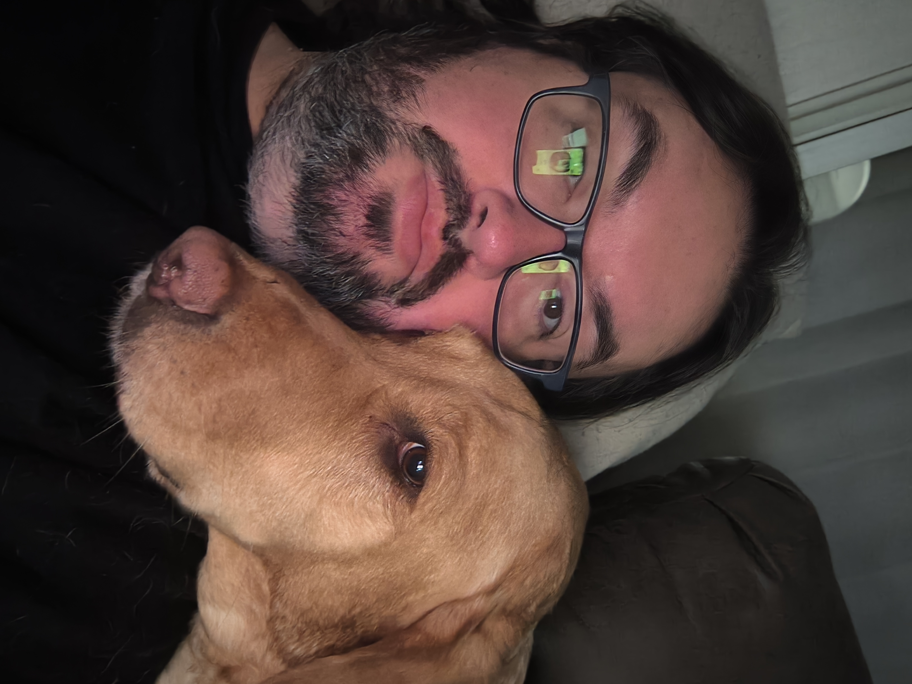

Captains Log

July 4th 2026
Power Outage
I lost power after the movie we saw last night. At approximately 10:15pm the house went dark. Normally that is only a minor inconvenience but with the heat it was something I was worried a little about. Still I expected it to come back on almost immediately, after all it wasn't a super hard storm or very long.
Oh buddy, was I wrong though. I woke up at about midnight sweating in bed because the air and the fans were no longer functioning. I decided to go to the truck and try and sleep there. It didn't work all that well and at 3:30 AM Katie came out to the truck to sit with me for a bit. Then we went inside together. The living room was slightly cooler than the upstairs so I feel asleep on the couch for a little bit. All in all I think I got like 3 hours of sleep if I'm being generous.
I then had to tell Katie something I knew she wouldn't want to hear, that is I don't think we can all go to her cousins house. I didn't want to leave Maggie at the house during a heat wave and no way to cool down. Since we have well water an electric pump primes the plumbing so without power we had no way of even getting more water set out for her. I would have like to set up like a kiddie pool or something outside in the shade, but I had no way of getting water for it. She said her cousin would not like it if we took Maggie with us.
We discussed it a little but, and she conceded that we could take her, but I told her if we did that we would have to take multiple vehicles. Katie was expected to meet her parents to pick up our niece, Elayna, who had been staying at their house in Virginia for the past 2 weeks. Since we had to have room in the back seat for Elayna, Maggie, and Seth I knew there was no way we could take that trip with just one vehicle. Maggie needs to be able to sit down, and Seth would have been pissed having to share all that space with both Maggie and Elayna.
I wish that her parents would have been willing to come our direction so we didn't HAVE to take Elayna back home. As it was because of her parents she had to go. I stayed home so I could take maggie out in my truck periodically to cool down in the AC.
20 Hour Outage
Needless to say I was alone with the dog much of the day with no air, 3 hours of sleep, and no power. The nice thing about the Macbook Neo though, is that I was able to use the hotspot on my phone and because the battery is so good I was able to watch videos all day without having to charge it. I would have liked to go somewhere like Starbucks and hold up for the day, but that leaves Maggie in the heat.
I kept going to Duquesne Light's website to post that I was out of power, and with it being a holiday I was seriously worried that I wouldn't get my power back on. They kept saying additional crews were needed and eventually the ETA just said unknown. Finally at like 3pm I saw a tree removal truck drive by the house. Being nebby and all I decided to drive up the street and see if could find the source of the issue to get an idea of the problem. Not that I would be able to help or that knowing would contribute anything, but I had time.
Shortly up the street they were working on removing a tree that was on the lines. I drove by that area a few times earlier in the day and I didn't even notice there was a tree on the lines. I'm not sure if that is because the foliage there is so thick or if it's because the tree was so small. Either way, I thanked the linemen for their help and decided to go to Sheetz for some water. As previously stated I couldn't just run some from the sink.
While we were at the Sheetz it started to rain. It came down in a torrential downpour like something I've never seen. I drove home, but visibility was poor. I was seriously worried that it would mean that the linemen would just leave. It was lightning and thundering after all. I sat in the dark in the house convinced that the power would not be back on that day. I was sure I would have to get a hotel somewhere for the night.
Shortly after that, around 6pm or so, the power came back on! It was a long day and I was exhausted. I went to bed shortly after that without even seeing any fireworks. I didn't care.
